Finite native-glyph corrections06 mcv: original left / source-glyph correction right
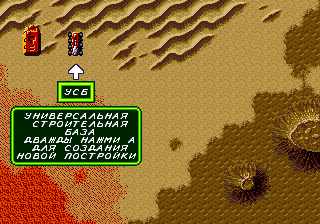
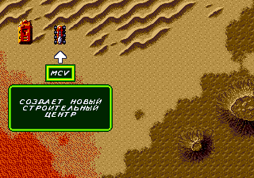
08 trooper: original left / source-glyph correction right
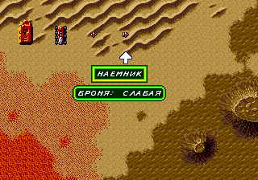
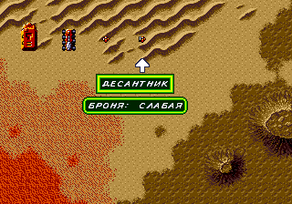
09 trike: original left / source-glyph correction right
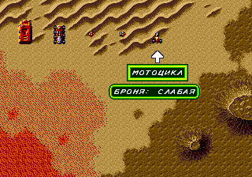
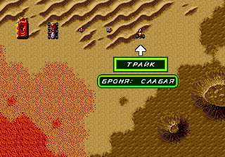
10 quad: original left / source-glyph correction right
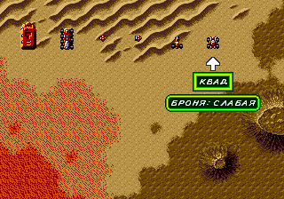
11 missile-tank: original left / source-glyph correction right
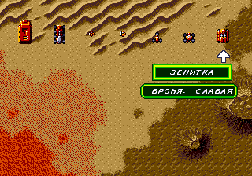
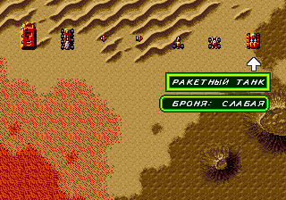
13 siege-tank: original left / source-glyph correction right
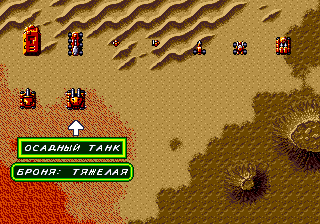
15 ornithopter: original left / source-glyph correction right
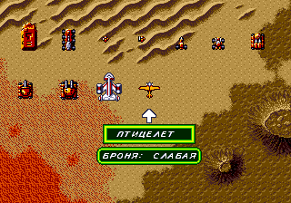
16 sonic-tank: original left / source-glyph correction right
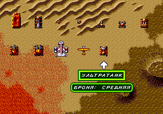
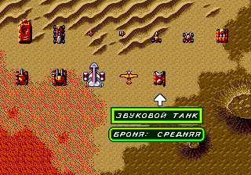
17 death-hand: original left / source-glyph correction right
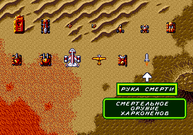
19 yard: original left / source-glyph correction right
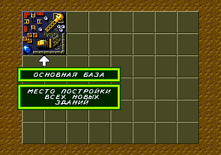
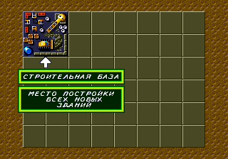
20 windtrap: original left / source-glyph correction right
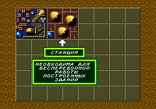
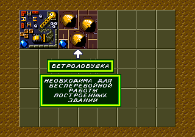
21 outpost: original left / source-glyph correction right
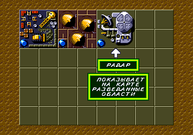
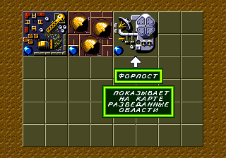
22 barracks: original left / source-glyph correction right
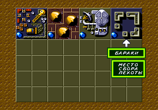
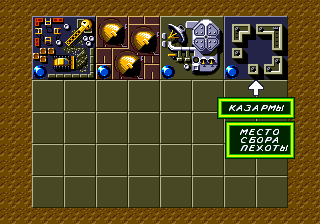
25 vehicle-factory: original left / source-glyph correction right
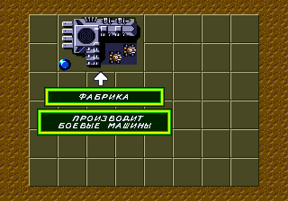
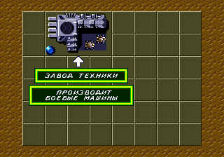
26 repair: original left / source-glyph correction right
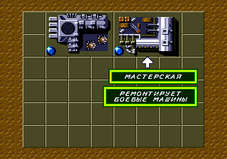
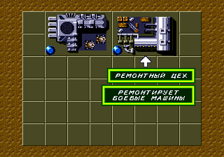
27 high-tech: original left / source-glyph correction right
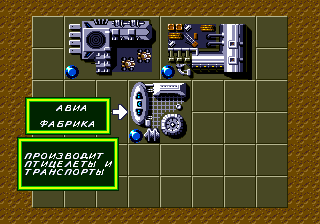
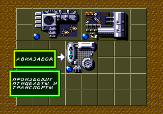